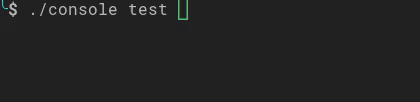

class Athena::Console::Helper::ProgressBar
inherits Reference
#
When executing longer-running commands, it can be helpful to show progress information that updates as the command runs:

Tip
Consider using ACON::Style::Athena to display a progress bar.
The ProgressBar helper can be used to progress information to any ACON::Output::Interface:
# Create a new progress bar with 50 required units for completion.
progress_bar = ACON::Helper::ProgressBar.new output, 50
# Start and display the progress bar.
progress_bar.start
50.times do
# Do work
# Advance the progress bar by 1 unit.
progress_bar.advance
# Or advance by more than a single unit.
# progress_bar.advance 3
end
# Ensure progress bar is at 100%.
progress_bar.finish
A progress bar can also be created without a required number of units, in which case it will just act as a throbber.
However, #max_steps= can be called at any point to either set, or increase the required number of units.
E.g. if its only known after performing some calculations, or additional work is needed such that the original value is not invalid.
Tip
Consider using an ACON::Helper::ProgressIndicator instead of a progress bar for this use case.
Be sure to call #finish when the task completes to ensure the progress bar is refreshed with a 100% completion.
Note
By default the progress bar will write its output to STDERR, however this can be customized by using an ACON::Output::IO explicitly.
If the progress information is stored within an Enumerable type, the #iterate method
can be used to start, advance, and finish the progress bar automatically, yielding each item in the collection:
bar = ACON::Helper::ProgressBar.new output
arr = [1, 2, 3]
bar.iterate(arr) do |item|
# Do something
end
Which would output:
0/2 [>---------------------------] 0%
1/2 [==============>-------------] 50%
2/2 [============================] 100%
Note
Iterator types are also supported, but need the max value provided explicitly via the second argument to #iterate if known.
Progressing#
While the #advance method can be used to move the progress bar ahead by a specific number of steps,
the current step can be set explicitly via #progress=.
It is also possible to start the progress bar at a specific step, which is useful when resuming some long-standing task:
# Create a 100 unit progress bar.
progress_bar = ACON::Helper::ProgressBar.new output, 100
# Display the progress bar starting at already 25% complete.
progress_bar.start at: 25
Tip
The progress can also be regressed (stepped backwards) by providing #advance a negative value.
Controlling Rendering#
If available, ANCI Escape Codes are used to handle the rendering of the progress bar,
otherwise updates are added as new lines. #minimum_seconds_between_redraws= can be used to prevent the output being flooded.
#redraw_frequency= can be used to to redraw every N iterations. By default, redraw frequency is 100ms or 10% of your #max_steps.
Customizing#
Built-in Formats#
The progress bar comes with a few built-in formats based on the ACON::Output::Verbosity the command was executed with:
# Verbosity::NORMAL (CLI with no verbosity flag)
0/3 [>---------------------------] 0%
1/3 [=========>------------------] 33%
3/3 [============================] 100%
# Verbosity::VERBOSE (-v)
0/3 [>---------------------------] 0% 1 sec
1/3 [=========>------------------] 33% 1 sec
3/3 [============================] 100% 1 sec
# Verbosity::VERY_VERBOSE (-vv)
0/3 [>---------------------------] 0% 1 sec/1 sec
1/3 [=========>------------------] 33% 1 sec/1 sec
3/3 [============================] 100% 1 sec/1 sec
# Verbosity::DEBUG (-vvv)
0/3 [>---------------------------] 0% 1 sec/1 sec 1kiB
1/3 [=========>------------------] 33% 1 sec/1 sec 1kiB
3/3 [============================] 100% 1 sec/1 sec 1kiB
Note
If a command called with ACON::Output::Verbosity::QUIET, the progress bar will not be displayed.
The format may also be set explicitly in code via:
# If the progress bar has a maximum number of steps.
bar.format = :very_verbose
# Without a maximum
bar.format = :very_verbose_nomax
Custom Formats#
While the built-in formats are sufficient for most use cases, custom ones may also be defined:
bar.format = "%bar%"
Which would set the format to only display the progress bar itself:
>---------------------------
=========>------------------
============================
A progress bar format is a string that contains specific placeholders (a name enclosed with the % character);
the placeholders are replaced based on the current progress of the bar. The built-in placeholders include:
%current%- The current step%max%- The maximum number of steps (or zero if there is not one)%bar%- The progress bar itself%percent%- The percentage of completion (not available if no max is defined)%elapsed%- The time elapsed since the start of the progress bar%remaining%- The remaining time to complete the task (not available if no max is defined)%estimated%- The estimated time to complete the task (not available if no max is defined)%memory%- The current memory usage%message%- Used to display arbitrary messages, more on this later
For example, the format string for ACON::Helper::ProgressBar::Format::NORMAL is " %current% [%bar%] %elapsed:6s%".
Individual placeholders can have their formatting tweaked by anything that sprintf supports
by separating the name of the placeholder with a :.
The part after the colon will be passed to sprintf.
If a format should be used across an entire application, they can be registered globally via .set_format_definition:
ACON::Helper::ProgressBar.set_format_definition "minimal", "Progress: %percent%%"
bar = ACON::Helper::ProgressBar.new output, 3
bar.format = "minimal"
Which would output:
Progress: 0%
Progress: 33%
Progress: 100%
Tip
It is almost always better to override the built-in formats in order to automatically vary the display based on the verbosity the command is being ran with.
When creating a custom format, be sure to also define a _nomax variant if it is using a placeholder that is only available if #max_steps is defined.
ACON::Helper::ProgressBar.set_format_definition "minimal", "%current%/%remaining%"
ACON::Helper::ProgressBar.set_format_definition "minimal_nomax", "%current%"
bar = ACON::Helper::ProgressBar.new output, 3
bar.format = "minimal"
The format will automatically be set to minimal_nomax if the bar does not have a maximum number of steps.
Tip
A format can contain any valid ANSI codes, or any ACON::Formatter::OutputStyleInterface markup.
Tip
A format may also span multiple lines, which can be useful to also display contextual information (like the first example).
Bar Settings#
The bar placeholder is a bit special in that all of the characters used to display it can be customized:
# The Finished part of the bar.
bar.bar_character = "<comment>=</comment>"
# The unfinished part of the bar.
bar.empty_bar_character = " "
# The progress character.
bar.progress_character = "|"
# The width of the bar.
bar.bar_width = 50
Custom Placeholders#
Just like the format, custom placeholders may also be defined. This can be useful to have a common way of displaying some sort of application specific information between multiple progress bars:
ACON::Helper::ProgressBar.set_placeholder_formatter "remaining_steps" do |bar|
"#{bar.max_steps - bar.progress}"
end
From here it could then be used in a format string as %remaining_steps% just like any other placeholder.
.set_placeholder_formatter registers the format globally, while #set_placeholder_formatter would set it on a specific progress bar.
Custom Messages#
While there is a built-in message placeholder that can be set via #set_message, none of the built-in formats include it.
As such, before displaying these messages, a custom format needs to be defined:
bar = ACON::Helper::ProgressBar.new output, 100
bar.format = " %current%/%max% -- %message%"
bar.set_message "Start"
bar.start # 0/100 -- Start
bar.set_message "Task is in progress..."
bar.advance # 1/100 -- Task is in progress...
#set_message also allows or an optional second argument, which can be used to have multiple independent messages within the same format string:
files.each do |file_name|
bar.set_message "Importing files..."
bar.set_message file_name, "filename"
bar.advance # => 2/100 -- Importing files... (foo/bar.txt)
end
Multiple Progress Bars#
When using ACON::Output::Sections, multiple progress bars can be displayed at the same time and updated independently:
output = output.as ACON::Output::ConsoleOutputInterface
section1 = output.section
section2 = output.section
bar1 = ACON::Helper::ProgressBar.new section1
bar2 = ACON::Helper::ProgressBar.new section2
bar1.start 100
bar2.start 100
100.times do |idx|
bar1.advance
bar2.advance(4) if idx.divisible_by? 2
sleep 0.05
end
Which would ultimately look something like:
34/100 [=========>------------------] 34%
68/100 [===================>--------] 68%
Constructors#
.new(output : ACON::Output::Interface, max : Int32 | Nil = nil, minimum_seconds_between_redraws : Float64 = 0.04, clock : ACLK::Interface = ACLK::Monotonic.new)#
Class methods#
.format_definition(name : String) : String | Nil#
Returns the global format string for the provided name if it exists, otherwise nil.
.placeholder_formatter(name : String) : ACON::Helper::ProgressBar::PlaceholderFormatter | Nil#
Returns the global formatter for the provided name if it exists, otherwise nil.
.set_format_definition(name : String, format : String) : Nil#
Registers the format globally with the provided name.
.set_placeholder_formatter(name : String, &block : self, ACON::Output::Interface -> String) : Nil#
Registers a custom placeholder with the provided name with the block being the formatter.
.set_placeholder_formatter(name : String, callable : ACON::Helper::ProgressBar::PlaceholderFormatter) : Nil#
Registers a custom placeholder with the provided name, using the provided callable as the formatter.
Methods#
#advance(by step : Int32 = 1) : Nil#
Advanced the progress bar by the provided number of steps.
#bar_character=(bar_character : String | Nil)#
Explicitly sets the character to use for the finished part of the bar.
#bar_offset : Int32#
Returns the amount of #bar_character representing the current #progress.
#bar_width : Int32#
Returns the width of the progress bar in pixels.
bar1 = ...
bar1.bar_width = 50
bar1.start 10
bar2 = ...
bar2.bar_width = 10
bar2.start 20
bar1.finish
bar2.finish
10/10 [==================================================] 100%
20/20 [==========] 100%
#bar_width=(size : Int32) : Nil#
Sets the width of the bar in pixels to the provided size.
See #bar_width.
#clear : Nil#
Clears the progress bar from the output.
Can be used in conjunction with #display to allow outputting something while a progress bar is running.
Call #clear, write the content, then call #display to show the progress bar again.
Note
Requires that #overwrite= be set to true.
#empty_bar_character : String#
Represents the character used for the unfinished part of the bar.
#empty_bar_character=(empty_bar_character : String)#
Represents the character used for the unfinished part of the bar.
#estimated : Float64#
Returns an estimated amount of time in seconds until the progress bar is completed.
#format=(format : String)#
Sets the format string used to determine how to display the progress bar. See Custom Formats for more information.
#format=(format : ACON::Helper::ProgressBar::Format)#
Sets what built in format to use. See Built-in Formats for more information.
#iterate(enumerable : Enumerable(T), max : Int32 | Nil = nil, & : T -> Nil) : Nil forall T#
Start, advance, and finish the progress bar automatically, yielding each item in the provided enumerable.
bar = ACON::Helper::ProgressBar.new output
arr = [1, 2, 3]
bar.iterate(arr) do |item|
# Do something
end
Which would output:
0/2 [>---------------------------] 0%
1/2 [==============>-------------] 50%
2/2 [============================] 100%
Note
Iterator types are also supported, but need the max value provided explicitly via the second argument to #iterate if known.
#max_steps : Int32#
Returns the maximum number of possible steps, or 0 if it is unknown.
#maximum_seconds_between_redraws=(maximum_seconds_between_redraws : Float64)#
Sets the maximum amount of time between redraws.
See Controlling Rendering for more information.
#message(name : String = "message") : String | Nil#
Returns the message associated with the provided name if defined, otherwise nil.
#minimum_seconds_between_redraws=(minimum_seconds_between_redraws : Float64)#
Sets the minimum amount of time between redraws.
See Controlling Rendering for more information.
#overwrite=(overwrite : Bool)#
Sets if the progress bar should overwrite the progress bar.
Set to false in order to print the progress bar on a new line for each update.
#placeholder_formatter(name : String) : ACON::Helper::ProgressBar::PlaceholderFormatter | Nil#
Returns the amount of time in seconds until the progress bar is completed.
#progress=(step : Int32) : Nil#
Explicitly sets the current step number of the progress bar.
ameba:disable Metrics/CyclomaticComplexity
#progress_character : String#
Represents the character used for the current progress of the bar.
#progress_character=(progress_character : String)#
Represents the character used for the current progress of the bar.
#progress_percent : Float64#
Returns the a percent of progress of #progress versus #max_steps.
Returns zero if there is no max defined.
#redraw_frequency=(steps : Int32 | Nil) : Nil#
Redraw the progress bar every after advancing the provided amount of steps.
See Controlling Rendering for more information.
#remaining : Float64#
Returns an estimated total amount of time in seconds needed for the progress bar to complete.
#set_message(message : String, name : String = "message") : Nil#
Sets the message with the provided name to that of the provided message.
#set_placeholder_formatter(name : String, &block : self, ACON::Output::Interface -> String) : Nil#
Same as .set_placeholder_formatter, but scoped to this particular progress bar.
#set_placeholder_formatter(name : String, callable : ACON::Helper::ProgressBar::PlaceholderFormatter) : Nil#
Same as .set_placeholder_formatter, but scoped to this particular progress bar.
#start(max : Int32 | Nil = nil, at start_at : Int32 = 0) : Nil#
Starts the progress bar.
Optionally sets the maximum number of steps to max, or nil to leave unchanged.
Optionally starts the progress bar at the provided step.
#step_width : Int32#
Returns the width in pixels that the current #progress takes up when displayed.
#step_width? : Int32 | ::Nil#
Returns the width in pixels that the current #progress takes up when displayed.